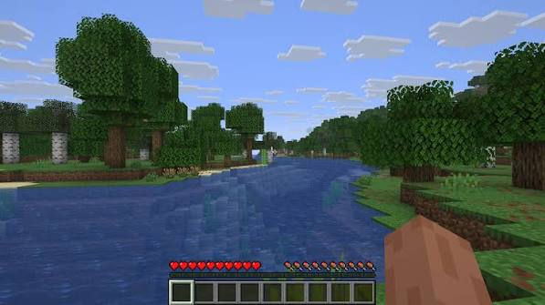
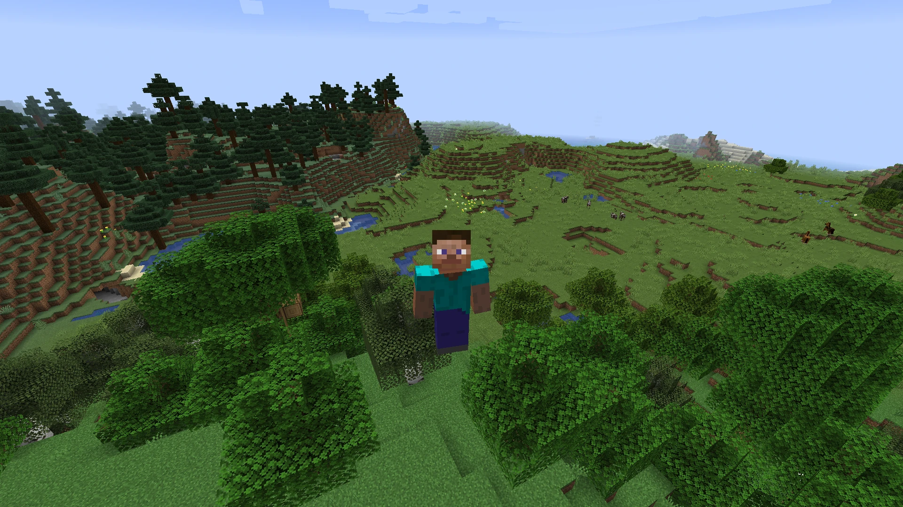
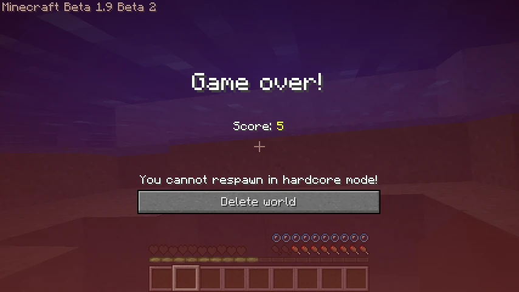

Minecraft is zo hele relaxed game die je kan spelen na een lange dag op school of werk
Je kan hier alles doen wat je wilt je enige limiet is je creativiteit. Er zijn verschillende gamemodes zoals: survival creative en hardcore
Survival : Je probeert to overleven in wereld met veel monsters zoals : Zombies,skeletons,Creepers enz. je upgrade je armor je zwaarden pickaxe en andere dingen en bouwt ook bases(huizen) en dan is het doel om naar de End te gaan en de Ender Dragon te verslaan

Creative Je hebt alle blokken monsters wapens in deze gamemode hier kan je echt je creativiteit uiten bij het bouwen van mooie huizen standbeelden enz.

Hardcore: Net als survival maar het is meer moeilijker want in deze gamemode heb je alleen één leven. dus als je doodgaat is je game over

Verder kan je ook met je vrienden multplayer in servers spelen en dat is altijd leuk
Ook voor Minecraft kan je mods downnloaden om je spel nog meer mooier of nog meer leuker te laten zien zoals: shaders, nieuwe wapens, nieuwe monsters enz.
Ik rate Minecraft een 10/10 het is echt een Peak game die ik jeugd veel hebt gespeeld en nu nog steeds wel soms als ik zin in heb
Bekijk mijn top 5 games